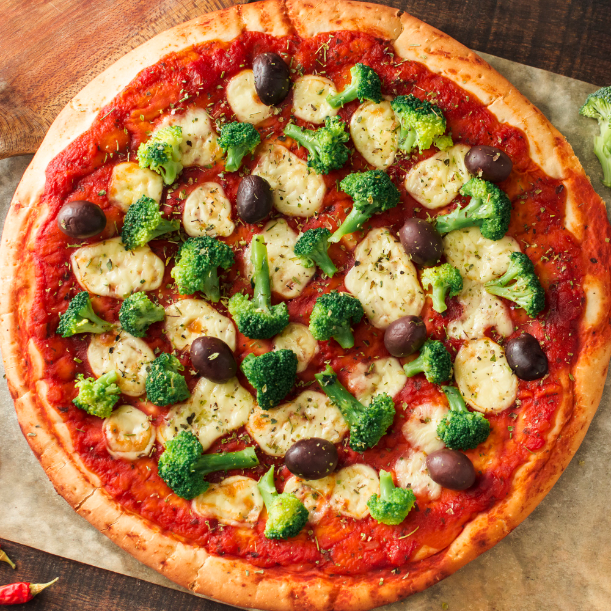
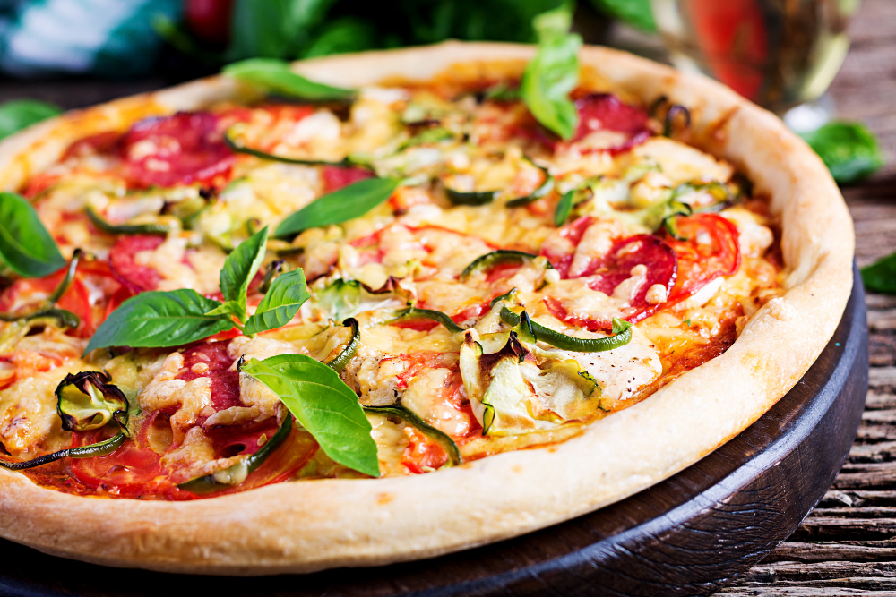
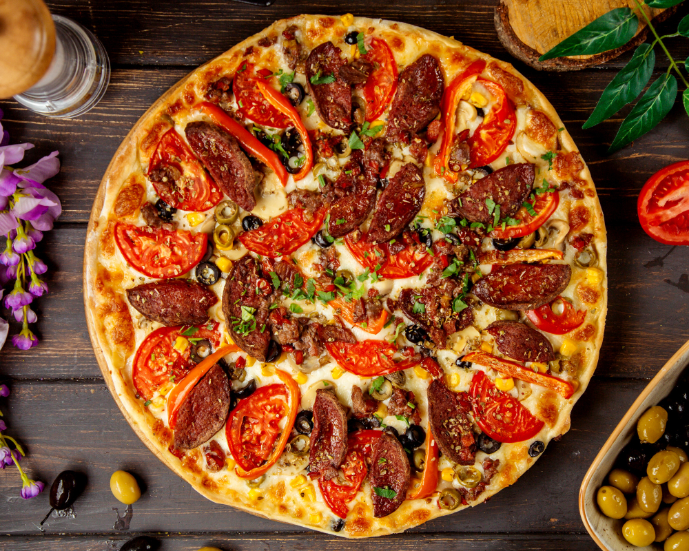
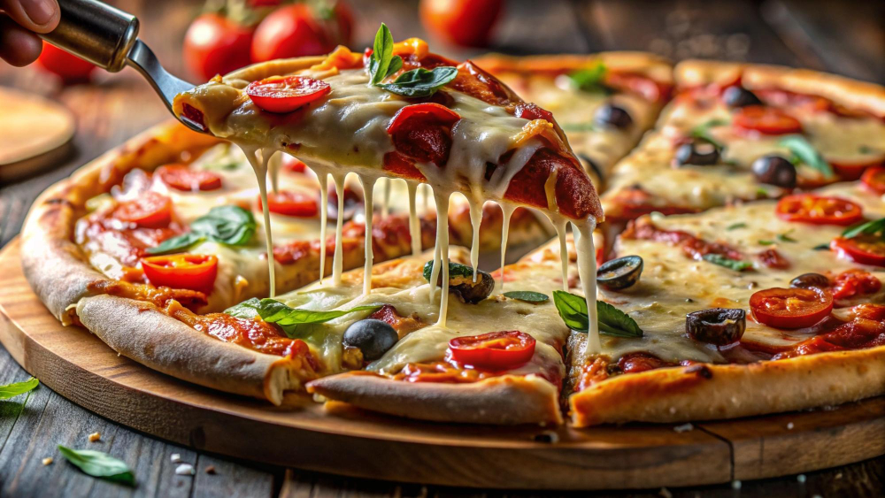

Cardápio
-
 Pizza Margherita
Pizza Margherita
Massa para pizza, Molho de tomate, Mussarela fresca, Folhas de manjericão, Azeite de oliva, Sal e pimenta a gosto
-
 Pizza Pepperoni
Pizza Pepperoni
Massa para pizza, Molho de tomate, Mussarela ralada, Fatias de pepperoni
-
 Pizza Quatro Queijos
Pizza Quatro Queijos
Massa para pizza, Molho de tomate, Mussarela ralada, Gorgonzola esfarelado, Parmesão ralado, Provolone fatiado
-

Pizza de Calabresa
Massa para pizza, Molho de tomate, Mussarela ralada, Fatias de calabresa, Cebola fatiada, Azeitonas pretas
-

Pizza de Frango com Catupiry
Massa para pizza, Molho de tomate, Mussarela ralada, Frango desfiado, Requeijão cremoso (Catupiry), Milho verde (opcional)
-

Pizza Portuguesa
Massa para pizza, Molho de tomate, Mussarela ralada, Presunto fatiado, Ovos cozidos fatiados, Azeitonas verdes, Cebola fatiada, Pimentão fatiado
-
 Pizza Napolitana
Pizza Napolitana
Massa para pizza, Molho de tomate, Mussarela ralada, Anchovas, Alcaparras, Orégano
-
 Pizza de Atum
Pizza de Atum
Massa para pizza, Molho de tomate, Mussarela ralada, Atum enlatado (drenado), Cebola fatiada, Azeitonas pretas
-

Pizza de Rúcula com Tomate Seco
Massa para pizza, Molho de tomate, Mussarela ralada, Rúcula fresca, Tomate seco, Azeite de oliva
-
 Pizza Vegetariana
Pizza Vegetariana
Massa para pizza, Molho de tomate, Mussarela ralada, Pimentão fatiado, Cogumelos fatiados, Abobrinha fatiada, Azeitonas
-
Pizza de Bacon com Milho
Massa para pizza, Molho de tomate, Mussarela ralada, Bacon frito, Milho verde
-
Pizza de Pesto com Queijo de Cabra
Massa para pizza, Molho pesto, Queijo de cabra esfarelado, Tomates-cereja cortados ao meio
Sobre Nós
Conheça um pouco mais sobre a Pizzaria Francisco
Nossa pizzaria e dedicada a criar as melhores pizzas do mundo, com ingredientes frescos e receitas exclusivas
Contato
Entre em contato conosco para fazer pedidos ou tiras suas duvidas
-
Endereço:
- Avenida Exemplo, 123
- Centro, Cidade, Qualquer
- Estado CEP: 00000-000
-
Telefone:
- (00) 0000-0000
- Whatsapp: (00) 0000-0000
- Email: franciscodouglas77@gmail.com
-
Horario de Funcionamento:
- Segunda a Sexta: 09:00 - 23:00
- Domingo e Feriados: 09:00 - 18:00